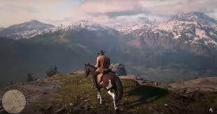
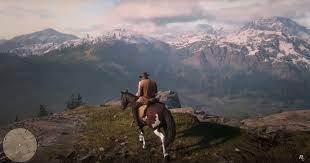

Red Dead Redemption II es un videojuego de acción y aventura desarrollado por Rockstar Games y lanzado en 2018. Es la precuela de Red Dead Redemption y está ambientado en el Viejo Oeste estadounidense a finales del siglo XIX. El juego sigue la historia de Arthur Morgan, un miembro de la banda de forajidos Van der Linde, mientras lucha por sobrevivir en un mundo que está cambiando rápidamente debido a la expansión de la civilización y la ley.
 
